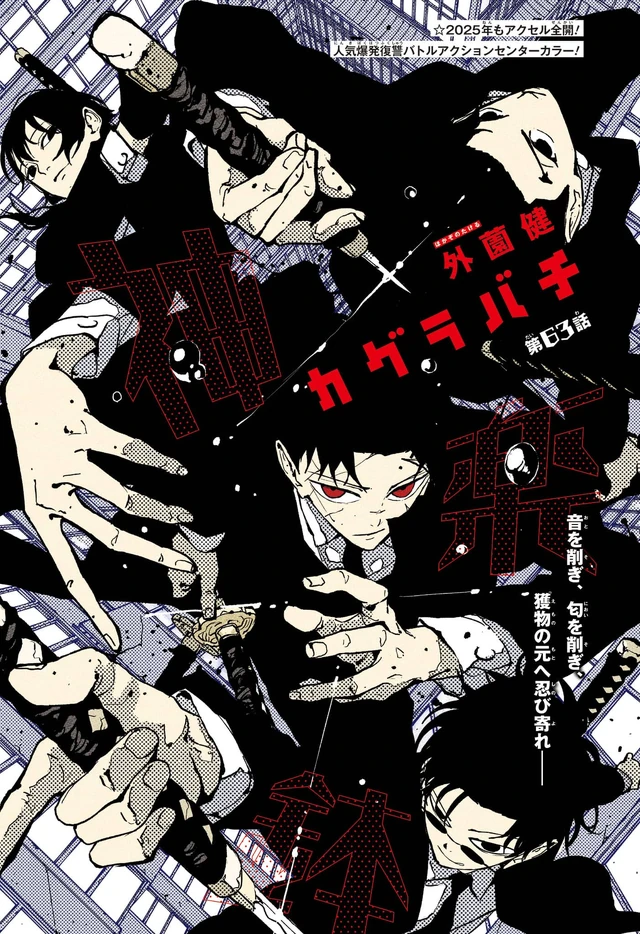

Overview
After Iori’s mother died, Samura tried to be a parent and a war criminal in the same house. When Yura came to the door with the truth of the Malediction, Samura had the Masumi erase him from her memory and sent her away. The spell frayed because she still loved him. It broke when she moved to shield a classmate, Iai, eyes shut, the way the style is supposed to be used.
The Kyoto Bloodshed Hotel is where she decides she wants the memories. Everything after that is a daughter walking toward a man who already spent himself trying to keep her out of the ledger.
Personality
A student who was told her father was a story. The Masumi seal did not make her cold. It made her incomplete. The spell frayed because she still loved him. It broke when she moved to shield a classmate, Iai, eyes shut, the way the style is supposed to be used. The body remembered the curriculum after the name had been deleted. That is the person: not a weapon waiting for a trigger, a student who protects first and then asks what the memory was for.
At the Kyoto Bloodshed Hotel she decides she wants the memories. That decision is the whole second movement of the Sword Bearer arc. Chihiro is copying the house style in the same building. Hiruhiko is turning the upper floors into Kumeyuri’s stage. Iori is not there to be a prize. She is there because Samura hung Owl over the country and the Masumi had to put her somewhere the Hishaku would come. She walks toward the man anyway.
She is what happens if you erase the father instead of explaining him. Hakuri is the son a house threw away. Iori is the daughter a house edited. Both of them choose the ledger over the lie. The book does not make her grim. It makes her exact: eyes closed in combat, book open on the hotel color page, a student before she is a bearer.
Abilities
Iai White Purity Style. Eyes closed in combat. Itsuo Shirakai’s speed school, mocked until it killed the mockers; Kiri Shirakai wants to behead the founder for saying women cannot. Iori is the proof the curriculum does not care about the founder’s last sentence. She is Samura’s daughter. The style is the household object the way goldfish are Chihiro’s. She uses it to shield a classmate before she has her father’s name back.
Chihiro fakes the style after watching her, Kuguri, and the house. She is one of the practitioners he copies. She is not yet a wartime bearer in the hotel chapters. After Samura dies holding Magatsumi, Tobimune passes to her. Crow, Owl, Suzaku, feathers, a national owl, flames that heal the wielder and can raise the dead, become a daughter’s support sword. The brief Kunishige forged for Samura does not retire with him.
The Masumi seal is the other technique on her page, and it is not hers. Ro, Moku, and Sumi served Samura until he freed them. They erased him from her memory after Yura came to the door with the Malediction. The seal is a father’s last parenting decision. Her ability is that it failed the moment she chose to protect someone.
Story role
She is off-page for Vs. Sojo and the Rakuzaichi. The Sword Bearer Assassination arc is her entrance. After Samura’s false death of Uruha, Owl hangs over Japan. The Masumi take her to the Kyoto Bloodshed Hotel. Volume 7, Night Battle, puts her on the jacket with Samura and Chihiro. Chapter 63’s color page is her book in that hotel. Operation: Easy Does It is the Kamunabi name for a night that will not stay easy.
Chihiro learns Iai by copying Kuguri and the house style in the same building. Iori’s seal breaks on the shield, not on a lecture. Hiruhiko wrecks the upper floors with Play. Samura arrives. Feathers, banquet, goldfish. Volume 8, Dawn, is her past, the Malediction spoken aloud, Samura walking into the duel. She has decided she wants the memories. The man she is walking toward has already spent himself trying to keep her out of the ledger.
Samura opens his eyes, sees her, and dies holding Magatsumi so Chihiro can leave. Tobimune goes to Iori. Part 1 ends with a daughter holding the support blade and a Sword Master loose in the Kamunabi. The hotel was never the destination. It was the place she chose the memories.
Relationships
Seiichi Samura is the father who tried to be a parent and a war criminal in the same house. After her mother died, Yura arrived with the truth of the island. Samura had the Masumi erase him and sent Iori away. He heals his eyes to see her. Then he spends the last cut on Magatsumi. Tobimune is the inheritance he could not talk his way out of giving.
Chihiro copies her style and then walks the same hotel toward the same man. He is the smith’s son saying what Enten was for; she is the swordsman’s daughter asking for the memories the seal stole. The Masumi, Ro, Moku, Sumi, are the household that carried her to Kyoto and served her father until he freed them. Ro is also the one who recovers Kumeyuri from Hiruhiko.
Yura is the man at the childhood door. Hiruhiko is the Hishaku who turns her hotel into a stage. Uruha is the other Iai inheritor, already “dead” when she enters; she does not train under him. Kiri Shirakai’s grievance with the founder sits on the same style sheet. Iori is the student the founder’s rule would have barred. The book does not pause to debate it. She already cut.
Notes
Iori Samura. Iai White Purity, eyes closed. Memory-sealed by the Masumi. Volume 7 and Volume 8 jackets. Chapter 63 is the hotel book. Present blade: Tobimune, after Samura’s death.
The Sword Bearer arc, chapters 47–115, is her story role. Official chapters: VIZ / MANGA Plus. Volume 8’s English edition (4 August 2026) is the hotel silhouette under Owl.
The school and the hotel
Kuguri and Toto are why the Masumi take her to the Kyoto Bloodshed Hotel. Sumi rides a motorcycle. Ikura, the classmate who sits next to her, trails Toto because he is the kind of loner she was kind to; his involvement helps the seal break when she shields him. Sengoku’s Reigen house is the veil. Chihiro copies Iai in the corridors. Hiruhiko wrecks the upper floors with Play. Samura arrives because two Enchanted Blades ping Owl. Kiri Shirakai is the other woman in the Iai family, a granddaughter at war with the founder rather than a daughter erased by a father. After Samura dies, Tobimune is in Iori’s hands. The support blade goes to the person he spent a religion keeping out of the ledger. See Kuguri, Kiri, Iai.